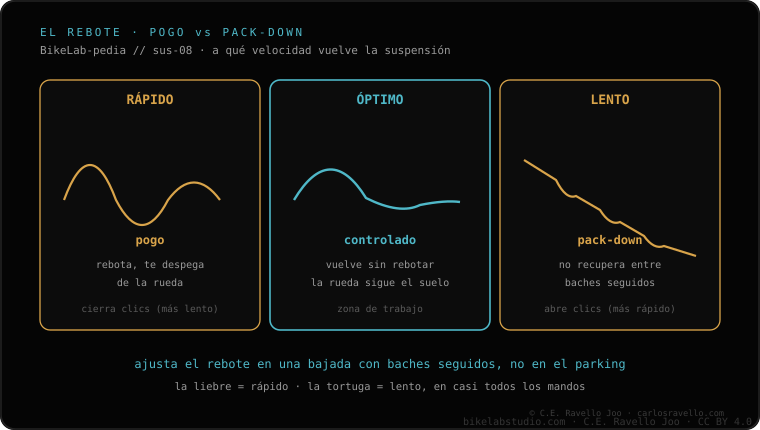

El rebote (rebound) es la velocidad a la que la suspensión vuelve a extenderse después de hundirse. Lo controla el damper con un clic, casi siempre rojo. Demasiado rápido = pogo: la bici rebota y salta. Demasiado lento = pack-down: en baches seguidos no recupera y se queda hundida. No cambia cuánto se hunde (eso es el SAG), solo la rapidez con que regresa. Para afinarlo paso a paso, mira cómo ajustar el rebote.
El rebote no decide cuánto baja tu suspensión, decide cómo vuelve. Y de ese "cómo vuelve" depende que la bici se sienta plantada o que te rebote como pelota.
Cuando golpeas un bache, la suspensión se comprime y guarda energía en el aire o el muelle. El rebote regula a qué velocidad se libera esa energía cuando la suspensión vuelve a estirarse. Quien lo gobierna es el damper, el cartucho hidráulico: hace pasar aceite por unos orificios, y el clic de rebote (el rojo) abre o cierra ese paso.
Es clave entender que el rebote no cambia la dureza ni el hundimiento. Eso lo fijan el SAG y la presión. El rebote solo administra el regreso. Por eso siempre se ajusta después de tener el SAG correcto.
Si el rebote está muy abierto (muy rápido), la suspensión devuelve la energía de golpe. La bici rebota como un pogo: al aterrizar de un salto te sientes catapultado, en una serie de baches la rueda salta del suelo y todo se vuelve nervioso e impredecible. Pierdes agarre porque la rueda pasa más tiempo en el aire que pegada al terreno.
Si el rebote está muy cerrado (muy lento), pasa lo contrario. En una serie de baches seguidos la suspensión se hunde con el primero y no alcanza a recuperar antes de que llegue el segundo, y luego el tercero. Se va quedando hundida: es el pack-down. La consecuencia es que pierdes recorrido útil justo cuando más lo necesitas, la bici se siente baja, dura y sin tracción.

El ajuste correcto vive entre esos dos extremos: lo bastante rápido para que la suspensión se recupere entre impacto e impacto, y lo bastante lento para que no te rebote. Una prueba clásica: baja de un bordillo y observa cómo vuelve la bici. Si rebota más de una vez, está muy rápido; si vuelve perezosa y se queda baja, está muy lento.
Cuéntanos qué sientes (salta, no recupera, nerviosa) y tu modelo de suspensión, y te decimos hacia dónde mover el rebote. Escríbenos por WhatsApp
La velocidad a la que la suspensión vuelve a extenderse tras hundirse. Lo controla el damper con un clic, casi siempre rojo.
Aparece el pogo: la bici rebota y salta, sobre todo al aterrizar o en baches seguidos, y pierde agarre.
Aparece el pack-down: en impactos seguidos no recupera y se queda hundida, perdiendo recorrido y tracción.
© 2026 BikeLab Studio. Contenido bajo CC BY 4.0: puedes copiarlo, traducirlo y publicarlo, incluso con fines comerciales. La cita es obligatoria. Sin atribución, la licencia se revoca de forma automática (CC BY 4.0, §6.a) y el uso pasa a ser una infracción de derechos de autor: solicitamos la retirada del contenido y su desindexación. · Diseño y propiedad: Carlos Ravello Joo